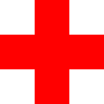

<!DOCTYPE html>
<html>

  <head>
    <meta charset="utf-8" />
    <title>Leaflet Maps with Open Data APIs</title>
    <meta name='viewport' content='initial-scale=1,maximum-scale=1,user-scalable=no' />

    <!-- Load Leaflet, use newest version at http://leafletjs.com -->
    <link rel="stylesheet" href="https://cdnjs.cloudflare.com/ajax/libs/leaflet/1.6.0/leaflet.css" />
    <script src="https://cdnjs.cloudflare.com/ajax/libs/leaflet/1.6.0/leaflet.js"></script>

    <!-- load jQuery, use newest version at https://code.jquery.com   -->
    <script src="https://cdnjs.cloudflare.com/ajax/libs/jquery/3.4.1/jquery.min.js"></script>

    <!-- Load Esri Leaflet, use newest version at http://esri.github.io/esri-leaflet -->
    <script src="https://unpkg.com/esri-leaflet/dist/esri-leaflet.js"></script>

    <!-- style the map -->
    <style>
      body {
        margin: 0;
        padding: 0;
      }
      #map {
        position: absolute;
        height: 100vh;
        width: 100vw;
        top: 0;
        left: 0;
      }
    </style>
  </head>

<body>

  <!-- Create div element to house the map -->
  <div id="map"></div>

  <script>
    // Initialize the map with specified center coordinates and zoom level
    var map = L.map('map', {
      center: [41.76, -72.5],
      zoom: 9,
    })


    // Add Carto baselayer
    var baselayer = new L.tileLayer('https://cartodb-basemaps-{s}.global.ssl.fastly.net/light_all/{z}/{x}/{y}.png', {
      attribution: '&copy; <a href="http://www.openstreetmap.org/copyright">OpenStreetMap</a> contributors, &copy; <a href="http://cartodb.com/attributions">CartoDB</a>'
    }).addTo(map)


    /*
      Add a legend (checkboxes) to the upper-right corner
      At first, baselayers and overlays are set to `null`
      We will add items to the legend
    */
    var legend = L.control.layers( null, null, {
      position: "topright",
      collapsed: false // false = open by default
    }).addTo(map)


    /*
      Add town boundaries for Connecticut using a GeoJSON export option from Socrata
      Source: https://data.ct.gov/Government/Town-Boundary-Index-Map/evyv-fqzg
      Minimum interactive elements, only thin light gray town boundaries
    */
    $.getJSON('https://data.ct.gov/api/geospatial/evyv-fqzg?method=export&format=GeoJSON', function(data) {

      var towns = L.geoJson(data, {
        fillOpacity: 0,
        weight: 0.5,
        color: 'silver',
      }).addTo(map)

      // Add town boundaries as a checkbox to the legend
      legend.addOverlay(towns, 'Town boundaries')

      // Re-center the map view
      map.fitBounds( towns.getBounds() )

    })


    /*
      Add EMS Stations as small blue points. To each point, attach tooltips with
      the name of the station.

      Data by Homeland Infrastructure Foundation-Level Data (Esri server),
      available at https://hifld-geoplatform.opendata.arcgis.com/datasets/emergency-medical-service-ems-stations/geoservice
    */
    var ems = L.esri.featureLayer({
      url: 'https://services1.arcgis.com/Hp6G80Pky0om7QvQ/arcgis/rest/services/EMS_Stations/FeatureServer/0',
      where: "STATE = 'CT'",
      pointToLayer: function(feature, latlng) {
        return L.circleMarker(latlng, {
          radius: 4,
          fillColor: 'blue',
          color: 'blue',
          weight: 0.1,
          opacity: 1,
          fillOpacity: 0.5,
          pane: 'markerPane'
        }).bindTooltip(feature.properties.NAME)
      }
    }).addTo(map)

    legend.addOverlay(ems, 'EMS Stations <span style="color: blue; opacity: 0.8">&#9679;</span>')


    /*
      From Socrata database of Medicare, add general hospitals in Connecticut
      using simple filtering on the `state` column.

      We rely on the geocoded_column (invisible in the table view of Socrata)
      to contain latitude and longitude values.
    */
    $.getJSON("https://data.medicare.gov/resource/xubh-q36u.json?state=CT", function(data) {
      
      var hospitals = []

      for (var i = 0; i < data.length; i++) {

        if (data[i].geocoded_column) {
          // Read point's coordinates (lon, lat)
          var lonlat = data[i].geocoded_column.coordinates

          // Create a marker with reversed coordinates order
          var marker = L.marker( [lonlat[1], lonlat[0] ], {
            icon: L.icon({
              iconUrl: 'images/hospital.png',
              iconSize: [24, 24],
              iconAnchor: [12, 12],
              opacity: 0.5
            })
          }).bindTooltip(
            data[i].hospital_name
              + '<br>' + data[i].city
              + '<br>' + data[i].zip_code
          )

          // Add marker to an array of markers
          hospitals.push(marker)
        }

      }

      // Create a single layer from all individual markers
      var hospitalsLayer = L.layerGroup(hospitals).addTo(map)

      // Add layer to the legend, together with the little icon
      legend.addOverlay(hospitalsLayer, 'Hospitals ')

    })

    </script>
    
  </body>

</html>
